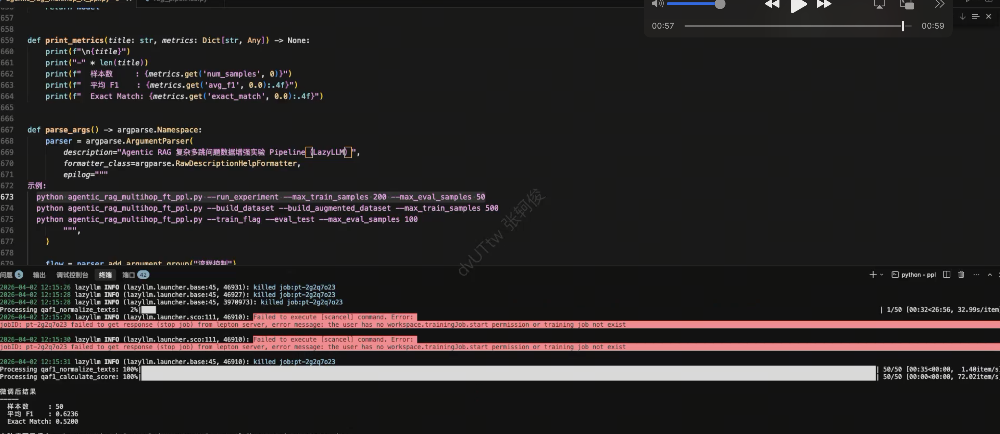

第28课时：Agentic RAG 与多跳数据增强¶
在 RAG（检索增强生成）系统里，用户常问需要跨多条证据才能回答的问题——例如先确认「某乐队的主唱是谁」，再根据该人物推断「其出生地所属国家」。
若只做一次检索、一次阅读，模型要么漏掉第二跳事实，要么把两段里各取一半拼成错误结论。
✅ Agentic RAG 在工业与学术讨论中，通常指：让大模型在规划、调用工具、根据中间结果修正策略上扮演更主动的角色，而不只是被动接收检索片段。
另一条同样重要的路线是：在数据侧用多阶段、可校验的合成流程，造出「像多跳、像会检验」的监督样本，再与原始数据一起微调——本课将原理、背景、LazyLLM Pipeline 与可落地的微调流程串成一条链。
本课将从零基础背景出发，系统讲解：
- RAG 代际与多跳难点：朴素 RAG → 高级/模块化 RAG → Agentic RAG；多跳 QA 的信息结构；
- 数据合成三板斧：Atomic（原子）、Depth（深度）、Width（宽度）各自对应的推理形态与质量控制；
- 有依据标签与指令微调：Grounding 约束、常见训练超参与评测指标（F1、EM）；
- LazyLLM 实战：用
atomic_rag_pipeline等生成增强 JSONL，以TrainableModule+finetune.auto做指令微调，并在同一验证集上对比多跳表现。
用通俗叙述 + 关键公式 + 表格对照 + 关键代码，帮助你在多跳场景下把「Agentic 思想」落到可训练、可对比的实验闭环里。
背景知识：从 RAG 到 Agentic 与自省式检索¶
RAG 在解决什么问题，瓶颈在哪里¶
检索增强生成（RAG）把外部知识以「检索到的片段 + 用户问题」的形式交给语言模型，缓解纯参数记忆的时效性不足与幻觉风险。
| 形态 | 典型流程 | 优势 | 典型瓶颈 |
|---|---|---|---|
| 朴素 RAG | 查询 → 检索 top-\(k\) → 拼上下文 → 生成 | 实现简单、易部署 | 单次检索；噪声段落易误导生成 |
| 高级 RAG | + 查询改写、混合检索、重排序（参见第27课） | 单次检索质量更高 | 仍多为「一条流水线」，难应对多跳整合 |
| 模块化 RAG | 路由、检索、重排、生成可替换 | 易 A/B 与工程迭代 | 需自行编排策略 |
| Agentic RAG（常见含义） | LLM 决定何时检索、用何工具、是否改写查询 | 可处理复杂任务与动态纠错 | 延迟、成本、编排复杂度上升 |
早期 朴素 RAG 多是固定流水线：查库 → 拼上下文 → 生成；一旦召回噪声大或问题需要多步整合，单次检索往往不够。
高级 RAG 在工程上引入查询改写、混合检索、重排序等；模块化 RAG 把组件拆开便于替换。到了 Agentic RAG，讨论重心常转向：谁在何时决定检索、用什么工具、如何根据中间结果调整策略——即把 LLM 当作能规划、能调用工具、能根据反馈修正路径的控制器。
多跳问答：为何是「硬骨头」¶
多跳 QA 指必须结合多个事实或段落才能回答的问题。可粗略理解为：答案依赖的推理链长度 \(L>1\)，每一步可能对应不同句子或文档。
公开基准如 HotpotQA 常提供维基风格段落与支持句标注，评测除答案正确性外，也关注模型是否用到正确证据。对 RAG 而言，难点包括：
- 召回：需要覆盖多个相关片段（与第27课「高召回」目标一致）；
- 阅读：在长上下文中完成指代消解（「该公司」指谁）、数值与实体对齐；
- 推理：在片段之间建立桥接关系（实体—关系—实体），避免「单段幻觉」或张冠李戴。
📌 直觉：多跳不是「把 top-\(k\) 拼长一点」就能解决，而是要在训练分布中反复出现「需要整合多处证据」的题型；这正是数据增强要补上的缺口。
数据合成：为何值得单独讲¶
高质量 RAG / 多跳训练数据往往稀缺、标注昂贵。自动合成 QA 若不经筛选，容易混入：
- 可召回问题：模型不查文档也能凭常识猜对，对「学检索边界」帮助有限；
- 上下文—答案不对齐：标签无法由给定文本严格推出，微调会强化幻觉。
因此业界常强调：可验证性、难度分层（原子 / 链式 / 综合），以及 无文档试答、分解检查、分数过滤 等手段——与上文「自省」在精神上相通，只是落实为造数据时的质量控制。
1. 核心直觉：数据侧如何体现「规划」与「把关」¶
可以把复杂问答拆成两类能力：先想清楚要问什么、证据在哪（近似规划），以及答案是否真被材料支撑（近似反思与把关）。在数据增强范式里，这两类能力被迁移到合成流水线中：
- 规划感：先产出细粒度事实问答（Atomic），再向「更深的关系链」或「更宽的跨片段综合题」扩展（Depth / Width），使训练分布覆盖「单点—链式—综合」多种形态。
- 把关感：在关键步骤用模型做交叉检验（例如：不给文档时能否答对——若能，则可能不依赖材料，样本价值偏低），并对深度题、综合题再做可解性与一致性方面的检查，减少噪声进入训练集。
- 有依据作答：为需要长上下文的题目生成标准答案时，明确要求只根据给定材料回答；材料不足则宁可不答，避免凭空编造，保证标签与上下文对齐。
这样训练出的模型，更习惯在给定段落上做整合与推理，与多跳评测设定一致。
1.1 三种合成形态与认知类比¶
| 形态 | 直觉 | 训练分布上的作用 |
|---|---|---|
| Atomic | 单文档、单事实，一问一答 | 夯实「读一句、答一点」的可验证性 |
| Depth | 沿 identifier / 关系链向外扩 | 增加「多步推理链」类问题 |
| Width | 合并多条原子 QA 为综合题 | 增加「跨片段整合」类问题，贴近多跳 |
2. 任务与数据：以多跳数据集为载体¶
典型设置是使用 HotpotQA（fullwiki 配置） 多跳数据集：每条样本包含问题、短答案，以及若干维基段落作为上下文。！alt text
{kind=link}
监督学习采用常见的 指令 + 上下文与问题 + 短答案 格式。下面是一种与教学实验兼容的逻辑结构（字段名可随框架调整）：
{
"instruction": "你是一个多跳问答助手。请严格依据给定上下文回答问题；若需跨句整合证据，请先综合相关事实再给出简洁答案。",
"input": "上下文：\n……\n\n问题：……",
"output": "短答案文本"
}
增强样本常按来源打上类别标记（如原始、原子、深度、宽度），便于事后分析哪一类对指标贡献更大。
3. LazyLLM三类数据合成：从原子事实到深与广¶
3.1 Atomic：原子问答¶
从单个文档出发，识别主题性标识与可验证的小结论，再生成针对性强、可检查的问题。流水线中通常包含：生成与清洗问题、用无文档试答筛掉「不查文档也能猜对」的条目，并基于原文整理金标答案。这一步产出的数据最适合打牢「读材料再说话」的基本功，也是后续 Width 阶段的「种子」来源之一。
✅ 无文档试答的直观含义：令模型在看不到文档的条件下回答问题；若仍答对，则该题可能过度依赖参数知识，作为「强依赖检索」的训练样本价值下降——与 IR 问题筛选的常见思路一致。
3.2 Depth：深度追问¶
在标识符与关系上做多轮自顶向下扩展：先找到更泛的父级主题与关系，再生成需要沿关系链多想一步才能回答的问题。每一轮可配合子集/一致性检查与问题质量验证，避免生成空泛或无法落地的深度题。深度题的标签答案建议在同一文档上下文内用有依据提示生成，保证与可见证据一致。
3.3 Width：宽度综合¶
把若干相邻或相关的原子问答合并成一道覆盖更广的综合题，再检验综合题能否合理分解回子问题、答案是否自洽。通过后再根据内部评分阈值过滤。综合题往往需要拼接多段文本作为上下文，并用有依据方式生成最终短答案（可辅以子答案作为提示），从而模拟「跨段整合」的多跳形态。
3.4 合并训练集¶
将上述增强结果与仅用原始支持段落构造的基线样本合并，并做去重，得到一份更丰富的微调语料。实践上建议保留基线样本，避免分布完全被合成数据带偏。
4. 有依据答案：让标签站得住脚¶
对 Depth、Width 等步骤中「模型新提出的问题」，需要自动生成与材料一致的参考答案。做法是使用明确的仅依据上下文的指令：若上下文不包含答案，则输出未知或空，并在后处理中丢弃无效条。这与 Atomic 阶段「从文档提炼金标」的目标一致，都是为了同一套可检验的 Grounding 标准。
从目标看，这与 Self-RAG 中「生成是否被材料支持」的关切方向一致；在数据增强路径中，常见实现是提示约束 + 后处理过滤，而非单独训练一个支持度分类头——工程上更简单，也易于与现有指令微调流程对接。
5. 训练与评测闭环¶
5.1 微调：在合并语料上做指令微调¶
在合并后的语料上做指令微调时，下列超参在实践中影响较大（具体取值依显存与基座模型而定）。
| 参数维度 | 常见取值范围 | 说明 |
|---|---|---|
| 训练轮数 | 1～5 | 数据量小易过拟合，可配合早停 |
| 学习率 | \(10^{-5}\) 量级 | 过大易破坏预训练知识 |
| 截断长度（cutoff） | 如 1024～4096 | 需覆盖「上下文 + 问题」总长 |
| 批次与梯度累积 | 依显存调整 | 等效大 batch 稳定训练 |
建议流程是：先在验证集上测基座 → 再训增强后的模型 → 同集复测，对比指标变化，并抽样阅读错误类型（事实遗漏、指代错误、过度推断等）。
5.2 评测指标：F1 与 Exact Match¶
多跳问答公开工作常报告 Token-level F1 与 Exact Match（EM），便于横向对比。
设标准答案词序列与预测词序列经规范化后为 \(A = (a_1,\ldots,a_m)\)、\(P = (p_1,\ldots,p_n)\)，记公共词袋计数（ multiset 意义下）对应的 precision / recall，则 F1 为二者的调和平均。直观上，F1 对部分正确的答案比 EM 更宽容。
Exact Match 则在规范化字符串完全一致时记为命中：
其中 \(y_i\) 为第 \(i\) 条标准答案，\(\hat{y}_i\) 为模型预测，\(\text{norm}(\cdot)\) 通常包含大小写、标点、冠词等规范化（具体与评测脚本一致）。
📌 读指标：EM 更严，适合衡量「一字不差」类任务；F1 更平滑，适合看整体趋势。实验报告中建议两者同时给出。
6. LazyLLM 实战：Pipeline 数据与多跳指令微调¶
下面我们具体说明 LazyLLM 如何串联「数据合成 → 合并 JSONL → 微调 → 评测」，从而在固定验证集上提升 F1 / EM，强化模型在长上下文内整合证据的能力。完整代码见(agentic_rag)
6.1 依赖与 Pipeline 入口¶
脚本从 lazyllm.tools.data.pipelines.rag_pipelines 引入三类合成流水线及 QA 评测流水线，用于生成增强样本并在评测阶段计算 F1：
import lazyllm
from lazyllm import finetune, launchers
from lazyllm.tools.data.pipelines.rag_pipelines import (
atomic_rag_pipeline,
depth_qa_pipeline,
qa_evaluation_pipeline,
width_qa_pipeline,
)
实验主流程会加载 HotpotQA、构造支持文档列表，再依次调用 atomic_rag_pipeline、depth_qa_pipeline、width_qa_pipeline（内部已封装标识符抽取、问题生成、验证与过滤等算子），将结果与原始训练样本合并为 merged_train.jsonl（字段为 instruction / input / output 的指令微调格式）。
6.2 最小示例：单文档上跑通 Atomic 合成¶
在理解完整实验前，可先用单条文档走通 Atomic 流水线，确认环境与基座可读：
import lazyllm
from lazyllm.tools.data.pipelines.rag_pipelines import atomic_rag_pipeline
llm = lazyllm.TrainableModule("Qwen/Qwen2.5-7B-Instruct") # 或本地路径
ppl = atomic_rag_pipeline(
llm=llm,
input_key="text",
max_per_task=5,
max_question=5,
llm_verify_filter_threshold=1,
)
source_docs = [
{
"text": "龙美术馆于 2025 年 4 月 28 日至 6 月 15 日举办当代艺术主题展览。",
"title": "龙美术馆",
"source_doc_id": "doc_0",
}
]
results = ppl(source_docs)
# results 中通常含 question、answer/refined_answer、text 等字段，可再格式化为 JSONL 训练行
将多条文档批量送入同一 ppl，即可得到一批原子级 QA；Depth / Width 则在更多文档与 Atomic 种子之上扩展深度题与综合题（完整逻辑见上述脚本中的 build_augmented_training_data）。
6.3 核心代码：用 TrainableModule 做指令微调¶
合并后的 merged_train.jsonl 作为 trainset，通过 finetune.auto 交给 LazyLLM 统一微调入口。下面是与脚本一致的 run_finetune 核心实现（含学习率、截断长度、梯度累积与 warmup 等）：
def run_finetune(
base_model: str,
train_data_path: str,
output_dir: str,
num_epochs: int,
per_device_batch_size: int,
learning_rate: float,
gradient_accumulation_steps: int,
cutoff_len: int,
warmup_ratio: float,
ngpus: int,
):
print(f'\n{"=" * 72}')
print("开始微调（Agentic RAG 多跳增强实验）")
print(f" 基座模型: {base_model}")
print(f" 训练数据: {train_data_path}")
print(f" 输出目录: {output_dir}")
print(
f" epochs={num_epochs}, lr={learning_rate}, batch={per_device_batch_size}, "
f"grad_accum={gradient_accumulation_steps}, cutoff_len={cutoff_len}, warmup_ratio={warmup_ratio}"
)
print(f'{"=" * 72}\n')
model = (
lazyllm.TrainableModule(base_model)
.mode("finetune")
.trainset(train_data_path)
.finetune_method(
(
finetune.auto,
{
"launcher": launchers.remote(nnode=1, nproc=1, ngpus=ngpus),
"num_train_epochs": num_epochs,
"per_device_train_batch_size": per_device_batch_size,
"learning_rate": learning_rate,
"gradient_accumulation_steps": gradient_accumulation_steps,
"cutoff_len": cutoff_len,
"warmup_ratio": warmup_ratio,
},
)
)
)
model.update()
print("微调完成！")
return model
6.4 一键实验与效果对比¶
脚本支持先评测基座、再训练、再评测，从而在同一验证集上直接对比多跳指标（脚本内用 qa_evaluation_pipeline 计算平均 F1，并统计 EM）：
python agentic_rag_multihop_ft_ppl.py --run_experiment --max_train_samples 200 --max_eval_samples 200
典型产出包括：merged_train.jsonl（原始 + Atomic/Depth/Width 增强）、finetuned_model/（微调权重）、eval_before.json / eval_after.json（基线与微调后明细）、experiment_summary.json（汇总指标与路径）。
下面是一次完整跑通后（验证集 50 条），基座(Qwen2.5-14b)与微调后同集对比：

| 阶段 | 样本数 | 平均 F1 | Exact Match |
|---|---|---|---|
| 基座模型 | 50 | 0.077 | 0.0 |
| 微调后 | 50 | 0.623 | 0.52 |
可见在同一验证集上，平均 F1 与 EM 均大幅提升：F1 从约 0.07 升至约 0.62，EM 从 0% 升至 52%，表明模型在给定上下文中做多跳式阅读与短答的能力明显增强。
7. 与更广义的 Agentic RAG 的关系¶
许多系统还会在推理时接入搜索引擎、向量库等工具，并学习何时检索、如何改写查询；有的工作会构造带检索与反思标记的序列数据。本课聚焦数据增强 + 有依据标签 + 监督微调这一条主线，先把「多形态、可校验」的训练数据与评测闭环跑通。
它与推理侧的 Agentic RAG（工具调用、多轮检索）互补：先让模型在静态上下文中练好整合与推理，再叠加检索策略与工具，往往是稳妥的迭代顺序。与第27课的 Reranker 结合时，典型系统形态是「召回 → 精排 → 将 top 文档拼上下文 → 多跳阅读生成」，数据侧增强负责让生成器更适应长证据推理。
8. 业界常见组件与框架（参考）¶
| 层次 | 常见选项 | 备注 |
|---|---|---|
| 编排与 Agent | LangGraph、LangChain Agent、LlamaIndex Agent | 适合实现多步检索与分支 |
| 数据与流水线 | LazyLLM atomic_rag_pipeline、depth_qa_pipeline、width_qa_pipeline 等 |
与「造数据 + 验证」衔接 |
| 评测基准 | HotpotQA、2WikiMultiHopQA 等 | 多跳难度与数据形态各异 |
| 生成模型 | 开源指令模型（如 Qwen、Llama 系等） | 微调需注意许可证与截断长度 |
9. 总结：Agentic RAG 数据增强的核心链条¶
| 问题 | 思路 | 在本课范式中的落点 |
|---|---|---|
| 单次 RAG 难以覆盖多跳 | 增加「链式 + 综合」题型分布 | Depth / Width |
| 合成数据噪声大、可召回 | 过滤与验证 | 无文档试答、分解/一致性检查、阈值过滤 |
| 标签与材料不一致 | 强约束 Grounding | 仅依据上下文的答案生成与丢弃规则 |
| 效果可量化 | 固定验证集与标准指标 | F1、EM；基座 vs 微调对比 |